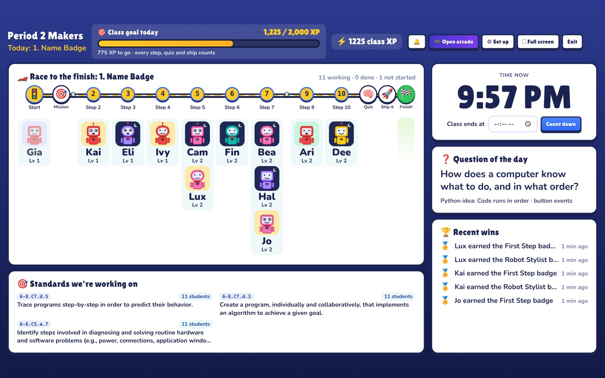

I teach middle school computer science and build the software my classes run on. This site works the way my lessons do: short steps, one idea at a time.
I'm a middle school computer science teacher with a software background. When a tool I needed didn't exist, I built it.
Most of my projects started as something my own students needed.
The biggest one is MS Code Lab.
MS Code Lab is a platform of computer science courses for grades 6 to 8. Each course is a full unit with its own lessons, checks, projects and game.
How many full courses run on it?
Seven courses: game programming, circuits, cybersecurity, block coding, phone apps, robotics and networking. More than 200 lessons share one teacher account.
Every course has a gradebook that fills itself in, a help queue for stuck students, a screen to project for the class, and a report of the steps students found confusing.
No student email. No ads. No trackers. Each school's data is walled off in the database itself.

The screen for the board. It never shows grades.
I also build tools for schools.
Teachers and administrators have their own problems. These are the ones I've built for.
Bass Lake is a 2D multiplayer fly fishing game I wrote in p5.js. You paddle a kayak around a lake that is different every time you play.
How does the lake get a new shoreline each time?
The lake is generated with marching squares over 2D noise. Panfish school with a boids algorithm, bass run a state machine, and multiplayer goes through Supabase. No game engine.
A student with an IEP, a student still learning English and a student racing ahead should all be able to work in the same room, on the same lesson.
One short instruction at a time.Every step is a single, plainly worded task.
Support that fades.Early lessons show exactly what to add. Later ones set a goal and keep a hint one tap away.
Choice without chaos.Students pick projects by interest, and the class still moves through the same big ideas.
Points never come from grades.Rewards follow progress and helping others, so nobody can see who is behind.
I redesigned my classroom.
The room had fluorescent lights and rows of identical tables.
What did I do before changing anything?
I asked three questions: what makes the room hard to focus in, what makes group work hard, and what would you change. The answers were consistent, so I put in warmer lighting, three seating zones and a permanent robotics area.
For our school's Care Week I made Care Garden in p5.js. Students submitted acts of kindness at a kiosk, and each one grew a flower in a shared garden on a big screen.
Thousands of submissions came in over one week.
That was version 1. I am building version 2 for this year: the garden redrawn as pixel art, where a smile at the webcam grows a flower.
As Team Leader I organize and lead meetings, carry communication between faculty and administration, and oversee staff initiatives.
I run the Computer Club and the Camera Club, and I wrote a licensure guide for para-educators. Before this job I was a special education instructional assistant.